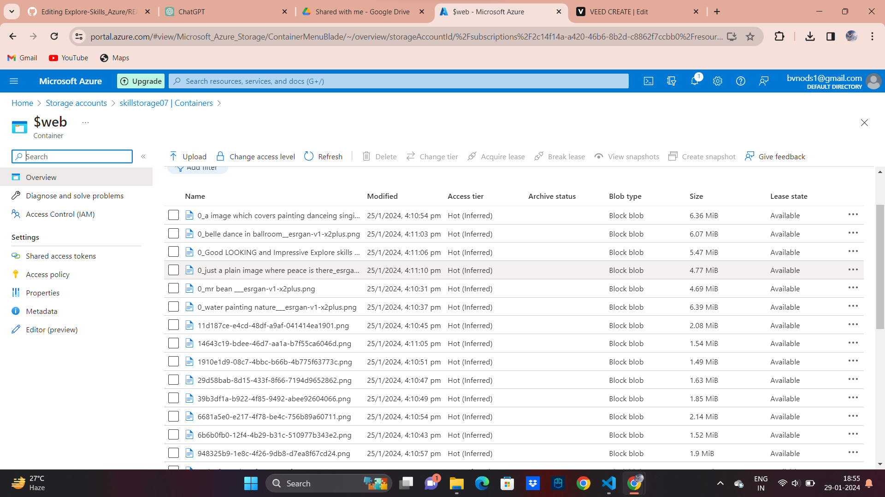

It takes an athlete to dance, but an artist to be a dancer. – Shanna LeFleur There are shortcuts to happiness and dancing is one of them. Don’t let people discourage you. Just fluff out your tutu and dance away. Dance is the hidden language of the soul. – Martha Graham Take more chances, dance more dances. Get up off of that thing. Dance and you’ll feel better. – James Brown If you stumble, make it part of the dance. When you dance, your purpose is not to get to a certain place on the floor. It’s to enjoy each step along the way. – Wayne Dyer One who expresses one’s self through dance is a dancer. One who expresses one’s self through a dancer is a dance teacher. Dance is a language beyond words, expressing that for which we have no words. – Jennifer De Leon Nobody cares if you can’t dance well. Just get up and dance. Great dancers are great because of their passion. – Martha Graham To watch us dance is to hear our heart speak. I do not try to dance better than anyone else. I only try to dance better than myself. Every day brings a chance for you to draw in a breath, kick off your shoes and dance. – Oprah Winfrey Dancing is surely the most basic of relevant of all forms of expression. Nothing else can so effectively give outward form to an inner experience. – Lyall Watson
How to streamline staff scheduling with Jackrabbit Dance Who wouldn’t want to make staff scheduling easier at their dance studio? That would be a dream. But do you know how to streamline staff scheduling at your dance studio? Not exactly? No worries! To make staff scheduling more successful and less stressful, this article highlights how using dance studio scheduling software will help you manage staff schedules like a pro. What is dance studio scheduling software? Dance studio scheduling software is a business [...]
